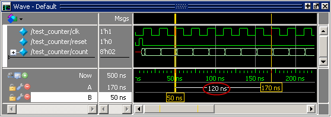
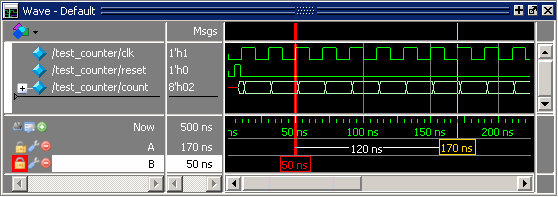

Even more
information is available when working with multiple cursors.
Procedure
- Add a
second cursor.
- Click
the Insert Cursor icon on the Wave window
toolbar.
- Right-click
the name of the new cursor and delete the text.
- Type “B” and press Enter.
- Drag cursor B and watch
the interval measurement change dynamically (Figure 1).
Figure 1. Interval Measurement
Between Two Cursors
- Lock cursor B.
- Right-click
the yellow time indicator box associated with cursor B (at
56 ns).
- Select Lock
B from the popup menu.
The cursor
color changes to red and you can no longer drag the cursor (Figure 2).
Figure 2. A Locked Cursor in
the Wave Window
- Delete
cursor B.
- Right-click
cursor B (the red box at 56 ns) and select Delete
B.